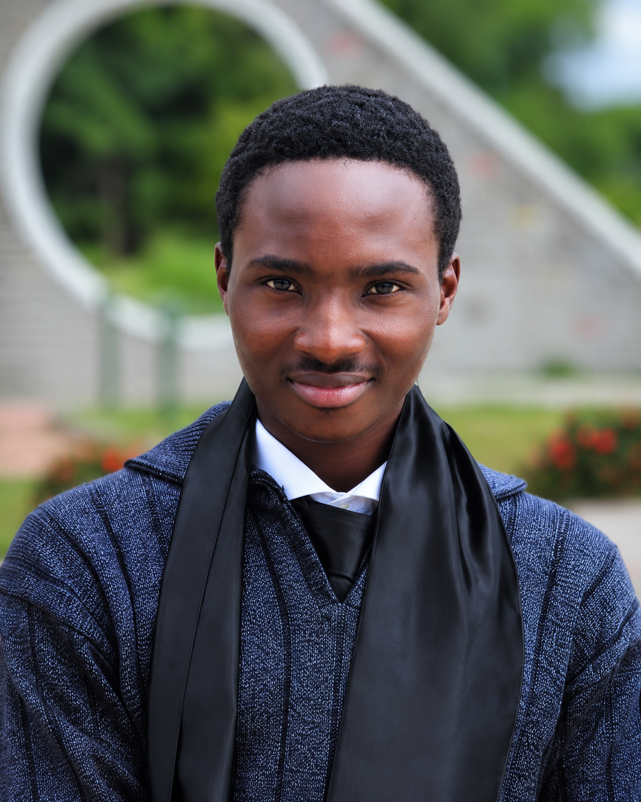

Open to projects--:-- WAT
Design that knows where it’s from.
I’m Daniel Oludahunsi (Dcodes_UIUX), a product and UI/UX designer with 4+ years of experience shaping fintech, commerce, consumer apps and many more apps/ websites for African users, from first research notes to developer-ready Figma.
- Experience
- 4+ years
- Focus
- Fintech, commerce, consumer, SaaS, e.t.c
- Handoff
- Figma to code
- Based
- Nigeria, Remote, working worldwide
Selected work
Six products, one point of view.
Wallets, marketplaces, learning and travel apps, plus the words and brand around them. Open any card for the thinking behind it.
Also shipped
- Reooma’s ScentResponsive landing page, built in HTML and CSS from a Figma export.
- Rental platform appInterface design for a property rental product.
- Illustration prompt librariesMonochromatic 3D and clay isometric styles for fintech projects, written for Midjourney and DALL·E.
- Portfolio copy packagesCase-study and site copy for designers who want their work explained clearly.
How I work
Four steps from idea to handoff.
The same sequence on every project, so clients always know what comes next.
Learn the room before drawing in it.
I start with the people, the market and the constraints: who is using this, on what phone, how much they trust money apps or marketplaces, and what the business needs the product to do.
What you getTurn a loose idea into a buildable scope.
I write the PRD and creative brief, map the user flows and cut an MVP that a small team can ship. Decisions get written down, so design and engineering start from the same page.
What you getSystems first, then screens.
In Figma I set tokens, type and components before drawing a full screen, then design every state: empty, loading, error and success. Each project follows the same step-by-step build, so nothing is left to guesswork.
What you getClose the gap between Figma and the build.
Specs, UX copy and assets go to developers together. I use Figma MCP to move designs into code, and I can build responsive HTML straight from the design when a team needs it.
What you getServices
What I can take off your plate.
Product design
Research-informed flows, MVP scoping and end-to-end product thinking for fintech, commerce and consumer apps.
UI design and systems
High-fidelity interfaces in Figma with tokens, components and every state documented.
UX writing
Onboarding, KYC, error and assistant copy, delivered as design-ready decks.
Brand and illustration
Identity, logo vectors and illustration direction, including Afro-anime and streetwear-inspired work.
Design-to-code
Developer handoff, Figma MCP workflows and responsive HTML builds.

About
An engineer’s discipline, a designer’s taste.
I’m Daniel Oludahunsi, known online as Dcodes_UIUX. I’m a product and UI/UX designer with more than four years of experience across client work, freelance engagements and ventures of my own.
My training is in Electrical and Computer Engineering, so I like clear systems, honest constraints and things that actually run. My taste comes from Yoruba and wider African visual culture, anime and streetwear, and I bring that into products built for African users.
I also run Royal Stitch, an Afro-Anime streetwear brand. Designing, shipping and selling my own work keeps my client work practical.
- Based
- Nigeria
- Studied
- Electrical & Computer Engineering, KWASU
- Founder of
- Royal Stitch
- Works across
- Fintech, commerce, consumer
Contact
Tell me what you’re building.
Fill in a quick brief, copy it, and send it to me on any channel below.